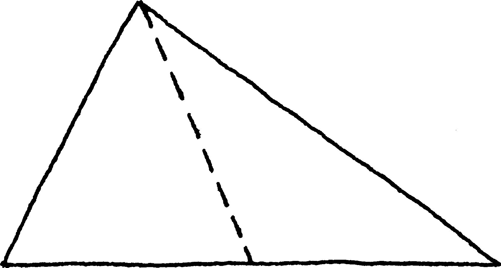
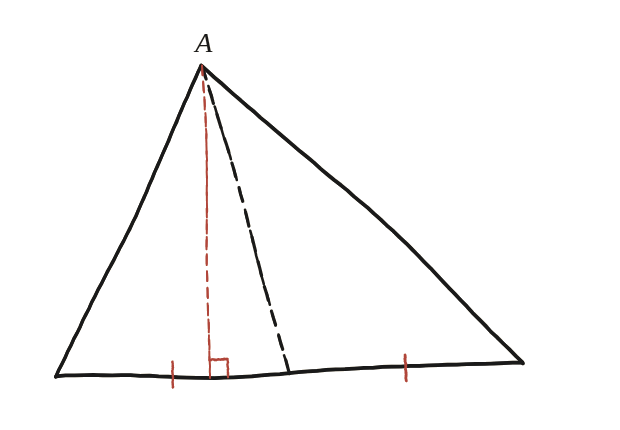

Suposa que tallem un triangle des d'un vèrtex fins al punt mitjà del costat oposat. L'àrea queda partida per la meitat?

Cal un argument, no només un "sí"
No n'hi ha prou de respondre que sí: cal poder explicar per què, amb un argument que funcioni per a qualsevol triangle, no només per al que s'hagi dibuixat en un cas concret.
El fet que ho decideix tot
Si dos triangles tenen la mateixa base i la mateixa alçada, tenen la mateixa àrea —és literalment el que diu la fórmula base × alçada / 2, res més amagat. La pregunta, doncs, es redueix a mirar els dos triangles que resulten del tall i comprovar si comparteixen aquestes dues coses sense haver de mesurar-les.
Les dues bases són iguals, per definició del tall
El tall va del vèrtex superior fins al punt mitjà del costat oposat. Per definició de punt mitjà, aquest tall deixa les dues meitats de la base amb exactament la mateixa llargada —no cal cap càlcul ni cap argument addicional, és directament la hipòtesi de l'enunciat.

I l'altura també és la mateixa
L'alçada de cada un dels dos triangles nous és la distància des del vèrtex superior fins a la recta que conté la base. Aquesta recta és la mateixa per als dos triangles —no ha canviat en fer el tall, seguim parlant del mateix costat del triangle original— i el vèrtex superior tampoc ha canviat de lloc. Per tant, l'alçada dels dos triangles nous és exactament la mateixa, un únic segment compartit.
Sí, sempre: la mediana des d'un vèrtex fins al punt mitjà del costat oposat divideix el triangle en dues parts d'àrea igual, perquè els dos triangles resultants comparteixen exactament la mateixa alçada (la distància del vèrtex a la recta de la base, que no canvia) i tenen la mateixa base (les dues meitats iguals, per definició de punt mitjà).
Comprovació
Base de 12, vèrtex a alçada 7 (no necessàriament centrat): amb el tall al punt mitjà, cada meitat té base 6 i alçada 7, i per tant àrea 6×7/2=21 —sumen 42, l'àrea sencera del triangle (12×7/2=42). Desplaçant el vèrtex a un altre punt de la mateixa alçada 7 —tan lluny com es vulgui, fins i tot fora de la base— cada meitat continua fent 21 exactament: ni la base (6) ni l'alçada (7) de cap de les dues no han canviat, i l'àrea només depèn d'aquestes dues coses. El que sí que canviaria les dues meitats és moure el vèrtex amunt o avall; també llavors, però, continuarien sent iguals entre elles, que és el que la pregunta demana.